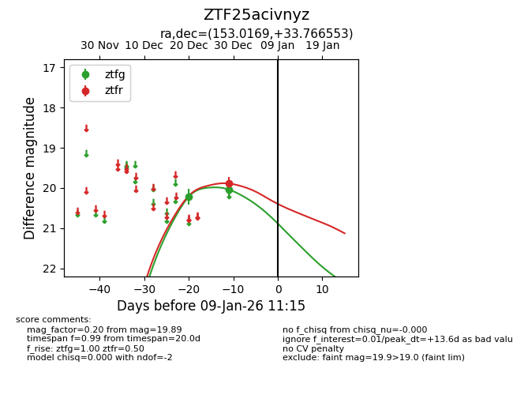
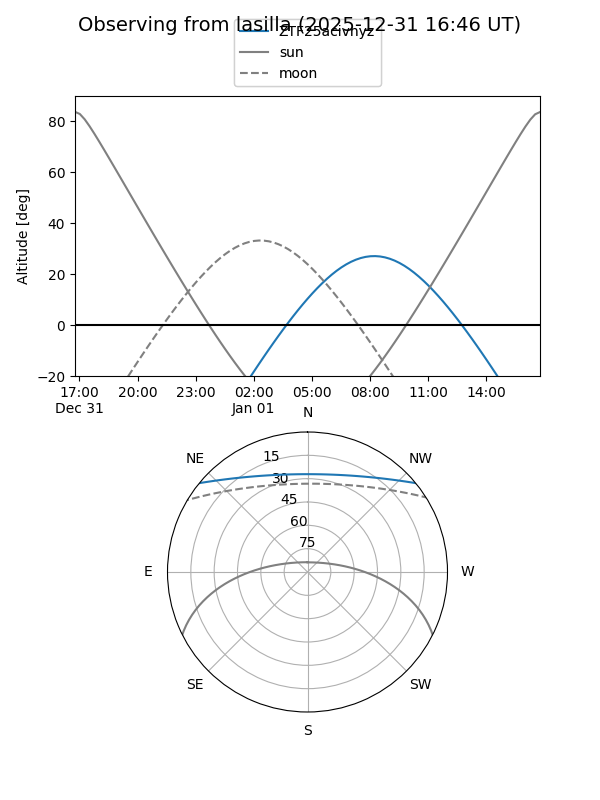
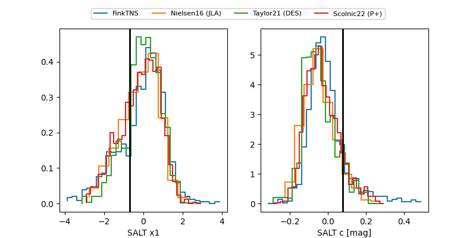

ZTF25acivnyz
Target ZTF25acivnyz at 2025-12-29 10:44
Aliases and brokers:
FINK: fink-portal.org/ZTF25acivnyz
Lasair: lasair-ztf.lsst.ac.uk/objects/ZTF25acivnyz
ALeRCE: alerce.online/object/ZTF25acivnyz
alt names
ZTF25acivnyz (ztf,fink_ztf)
Coordinates:
equatorial (ra, dec) = 153.0169,+33.76655
equatorial (HMS+DMS) = 10:12:04.06,+33:45:59.59
galactic (l, b) = (192.0098,+55.23595)
Flags:
Photometry:
last ztfg=20.04
2 ztfg detections
Lightcurve

Visibility


Additional plots
